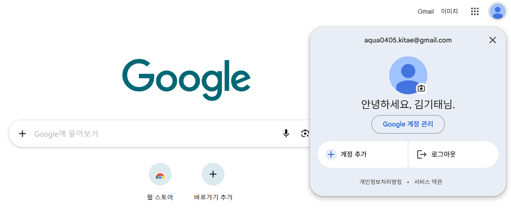
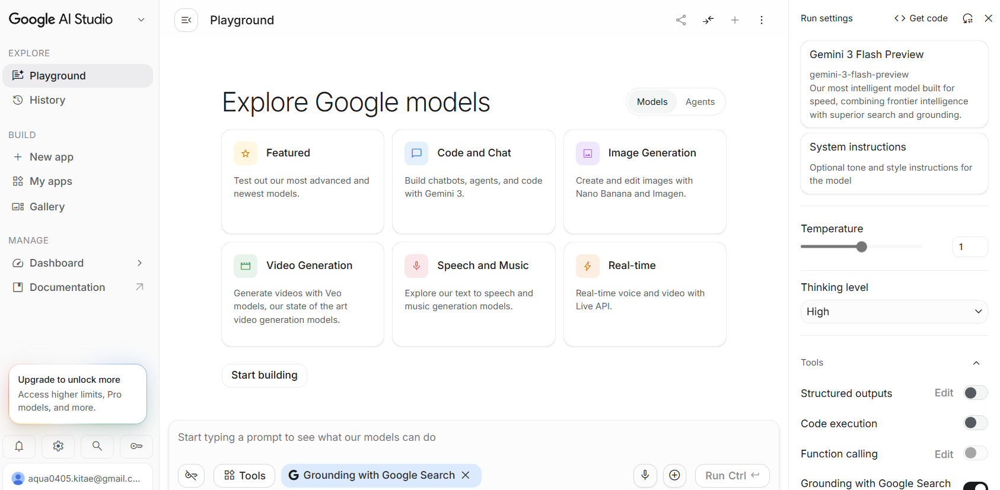
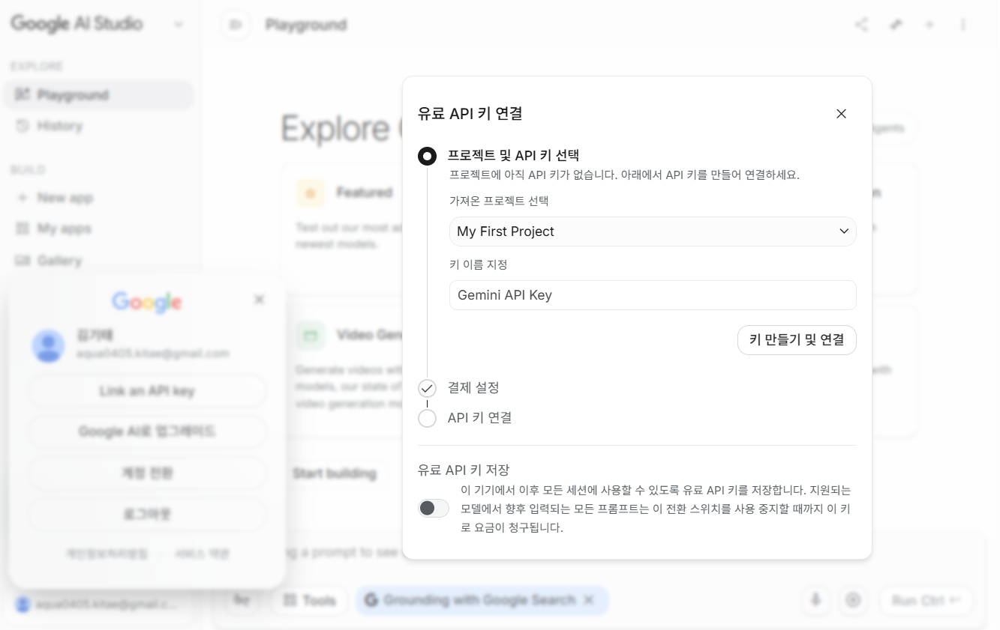
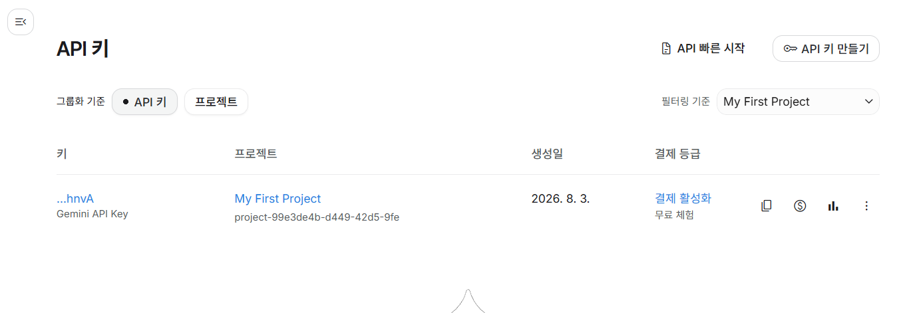
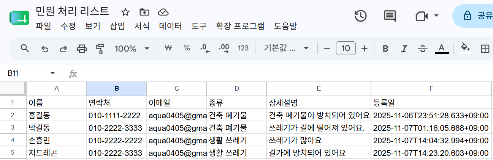
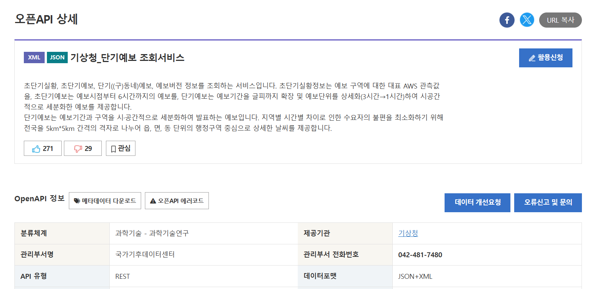

1일차 수업은 n8n 화면에 로그인한 뒤, 구글 계정으로 여러 구글 서비스(시트, 지메일,
캘린더)와 구글의 AI 모델(Gemini)을 연결하는 방식으로 진행됩니다. 아래 다섯 가지만
미리 준비해두면 수업 시간에 헤매지 않습니다.
n8n 접속1일차 01강부터 필요합니다. 접속 주소와 로그인 정보를 미리
확인해두세요 — 페이지 아래쪽 "n8n 접속 준비"에 안내가 있습니다.
구글 계정
개인 Gmail 권장. 1일차·2일차 공통으로 씁니다.
구글 시트 준비1일차 3강부터 사용합니다. 페이지 아래쪽 "구글 시트 준비"에 안내가 있습니다.
Gemini API 키1일차 6강부터 사용합니다.
기상청 단기예보 API 키2일차용입니다 — 지금은 신청만 해둡니다.
① 구글 계정 준비
이미 쓰고 있는 개인 Gmail 계정이 있다면 그대로 쓰면 됩니다. 없다면
accounts.google.com에서 새로 만드세요.
기관 계정(예: @korea.kr) 대신 개인 Gmail을 쓰세요
기관에서 발급한 구글 계정은 관리자가 외부 앱 연결을 막아둔 경우가 많습니다.
이 경우 수업 중 3강(구글 시트 연결)에서 권한 오류가 나는데, 학생 스스로는
풀 수 없는 문제입니다. 처음부터 개인 Gmail 계정으로 진행하세요.
[그림 준1-1] 개인 Gmail 계정으로 로그인한 상태 — 오른쪽 위 프로필을 누르면 지금 로그인한 주소가 보입니다

② Gemini API 키 발급
Gemini는 구글이 만든 AI 모델입니다. n8n에서 이 모델을 쓰려면 "API 키"라는
비밀번호 같은 문자열이 필요합니다. 아래 순서대로 발급받습니다.
AI Studio 접속
방금 준비한 구글 계정으로 로그인한 브라우저에서
https://aistudio.google.com 주소로 들어갑니다.
Explore Google models라고 적힌
Playground 화면이 열리면 제대로 들어온 것입니다. 화면 왼쪽
맨 아래에 지금 로그인한 구글 계정 주소가 보이니, 준비한 계정이 맞는지 여기서
확인하세요.
[그림 준1-2] AI Studio에 로그인하면 열리는 Playground 화면

API 키 화면으로 이동해 키 만들기
주소창에 https://aistudio.google.com/apikey를 입력해
API 키 화면으로 갑니다([그림 준1-4]와 같은 목록 화면입니다). 오른쪽 위
API 키 만들기 버튼을 누르면 [그림 준1-3]처럼 작은 창이
열립니다. 가져온 프로젝트 선택에서
My First Project를 고르고,
키 이름 지정 칸에 Gemini API Key처럼
나중에 알아볼 이름을 적은 뒤 아래 만들기 버튼을 누릅니다.
창 제목이나 버튼 문구는 계정 상태에 따라 다르게 보일 수 있습니다
(예: 유료 API 키 연결, 키 만들기 및 연결).
프로젝트를 고르고 키 이름을 적는다는 뼈대는 같으니 그대로 진행하면 됩니다.
결제 정보를 등록하라는 안내가 함께 보여도 지금 등록할 필요는 없습니다.이미 만든 키가 있다면 새로 만들지 않고 그 키를 그대로 써도 됩니다.
[그림 준1-3] 프로젝트와 키 이름을 정하는 창

키 복사해서 보관
키가 만들어지면 [그림 준1-4]처럼 API 키 목록에 한 줄이 생깁니다. 보안을 위해
키 값은 …hnvA처럼 뒷자리 몇 글자만 보이고, 그 아래에 아까
정한 키 이름이 적혀 있습니다. 그 줄 오른쪽 끝의 복사 아이콘(겹친 사각형
모양)을 누르면 키 전체가 복사됩니다. 메모장 등 나만 볼 수 있는 곳에 잠시
붙여둡니다. 수업 시간에 n8n에 붙여넣을 것입니다.
같은 줄에 보이는 프로젝트·
생성일·결제 등급은 지금 신경 쓰지
않아도 됩니다.
[그림 준1-4] 발급된 키가 한 줄로 표시된 API 키 목록

API 키는 비밀번호와 같습니다
이 키를 아는 사람은 내 계정의 한도로 AI를 마음대로 쓸 수 있습니다.
화면 공유 중에 키가 보이는 화면을 띄우지 마세요. 카카오톡·문자 등 메신저로
남에게 전송하지도 마세요. 수업 중에는 n8n 화면에만 붙여넣습니다.
무료로 쓸 수 있나요
네, Gemini는 무료로 쓸 수 있는 한도가 있습니다. 다만 구글이 이 한도(하루에 몇 번까지
등)를 고정된 표로 공개하지 않고, 계정마다 AI Studio의 사용량 화면에서 확인하도록
바뀌었습니다. 정확한 한도가 궁금하면 AI Studio에 로그인한 뒤 사용량(Usage) 메뉴를
확인하세요. 이 문서에는 숫자를 적지 않습니다 — 계정마다 다르고 수시로 바뀌기 때문입니다.
모델은 반드시 직접 골라서 지정하세요
n8n에서 Gemini 모델 노드를 추가하면 화면에 모델 이름이 미리 채워져 있습니다.
이걸 그대로 두지 말고, 반드시 모델 선택 목록(드롭다운)을 열어 아래 값을
직접 골라서 바꾸세요.
이 수업에서 쓰는 모델: models/gemini-2.5-flash
n8n 버전에 따라 처음부터 models/gemini-3-flash-preview처럼
이름에 preview가 들어간 모델이 기본값으로 채워질 수 있습니다.
preview(미리보기) 모델은 구글이 예고 없이 이름을 바꾸거나 없애버릴 수 있어서,
수업 도중 갑자기 작동하지 않을 위험이 있습니다. 그래서 반드시 위 값으로
직접 바꿔야 합니다.
수업 중 한도 초과(사용량 화면에 오류가 뜸) 안내를 받으면
models/gemini-2.5-flash-lite로 바꿔서 계속 진행하세요.
③ n8n 접속 준비
n8n은 따로 설치하는 프로그램이 아니라 웹 브라우저 주소창에 주소를 넣어
여는 화면입니다. 그래서 무엇보다 먼저 필요한 것은 "어느 주소로 들어가면
되는가"입니다.
그 주소를 마련하는 방법이 둘 있습니다 — n8n 클라우드에 가입해 내 전용
주소를 받거나, 내 컴퓨터에 설치해 내 컴퓨터를 가리키는 주소를 쓰는
것입니다. 둘 다 화면과 실습 내용은 완전히 같습니다.
→ n8n을 쓰는 두 가지 방법 페이지에서 두
가지를 비교하고 각각의 접속 순서를 안내합니다. 01강을 시작하기 전에 이 페이지를
보고 한 가지를 골라 로그인까지 마쳐두세요. 수업 중에는 회원가입만 하면
되는 n8n 클라우드를 권합니다.
구글 연결 방식이 방법마다 다릅니다
아래 3강부터 쓰는 구글 시트·Gmail·캘린더 연결은 어느 방법을 골랐느냐에 따라
화면이 달라집니다. n8n 클라우드는 로그인 버튼만 누르면 되지만,
내 컴퓨터에 설치한 경우에는 Client ID·
Client Secret 두 값을 먼저 넣어야 합니다.
두 가지 방법 페이지의 구글 연결 항목을
3강 전에 반드시 읽어보세요.
구글 시트 준비 — 1일차 3강부터 사용합니다
1일차 3강에서는 민원 접수 내용을 구글 시트에 자동으로 기록합니다. 수업 시간에 헤매지
않도록 시트를 미리 만들어두세요.
새 스프레드시트 만들기
준비한 구글 계정으로 구글 드라이브(drive.google.com)에
들어가 새 스프레드시트를 하나 만듭니다.
이름은 자유입니다. 예: 민원 처리 리스트
머리글 6개 입력하기
시트의 1행(맨 윗줄)에 아래 여섯 칸을 정확히 이 순서로 입력합니다.
이름 · 연락처 ·
이메일 · 종류 ·
상세설명 · 등록일
[그림 준1-5] 머리글 여섯 개가 1행에 입력된 시트 (문서 이름: 민원 처리 리스트)

그림에는 2행 아래로 값이 들어가 있지만, 지금 준비할 것은 1행
머리글뿐입니다. 아래 줄들은 1일차 3강 실습을 마치면 n8n이 자동으로 채워 넣는
모습입니다 — 지금은 1행만 있으면 됩니다.
머리글 철자를 정확히 맞추세요
1일차 3강에서 n8n은 이 머리글 이름 그대로를 기준으로 각 칸에 값을 채워 넣습니다.
철자가 하나라도 다르면(띄어쓰기, 오타 포함) 값이 엉뚱한 칸에 들어가거나
아예 비어 보입니다. 지금 정확히 맞춰두면 3강에서 헤매지 않습니다.
2일차에 쓸 것 — 지금 미리 신청해두세요
1일차 실습에는 이 항목이 전혀 필요 없습니다. 아래 절차만 지금 시작해두면
2일차 시작 전까지 승인이 끝나 있을 가능성이 높다는 뜻으로 여기에 적어둡니다.
1일차를 진행하는 데는 아무 지장이 없으니 걱정하지 마세요.
공공데이터포털 가입https://www.data.go.kr에 접속해 회원가입합니다.
이미 계정이 있다면 로그인만 하면 됩니다.
기상청 단기예보 API 검색
검색창에 기상청_단기예보 또는
단기예보 조회서비스를 검색합니다.
활용신청
검색 결과에서 기상청_단기예보 조회서비스를 눌러
오픈API 상세 페이지로 들어갑니다. 제목 오른쪽에 있는 파란
활용신청 버튼을 누르고 사용 목적을 간단히 적어
제출합니다.
승인까지 보통 몇 시간에서 하루 정도 걸릴 수 있습니다. 그래서 미리 신청해두는 것입니다.
[그림 준1-6] 오픈API 상세 페이지 오른쪽 위의 활용신청 버튼

승인 후 인증키 확인
승인되면 마이페이지 안, 발급된 인증키를 보여주는 메뉴에서
인증키(서비스키)를 확인할 수 있습니다. 2일차에 이 키를 사용합니다.
[그림 준1-7] 마이페이지에서 인증키가 표시된 화면
캡처 위치: 공공데이터포털 마이페이지에서 발급된 인증키(서비스키) 문자열이 보이는 화면, 메뉴 위치 포함
지금 당장 승인이 안 나도 괜찮습니다
1일차에는 전혀 쓰지 않으니, 신청만 해두고 승인 메일이 올 때까지 기다리면 됩니다.